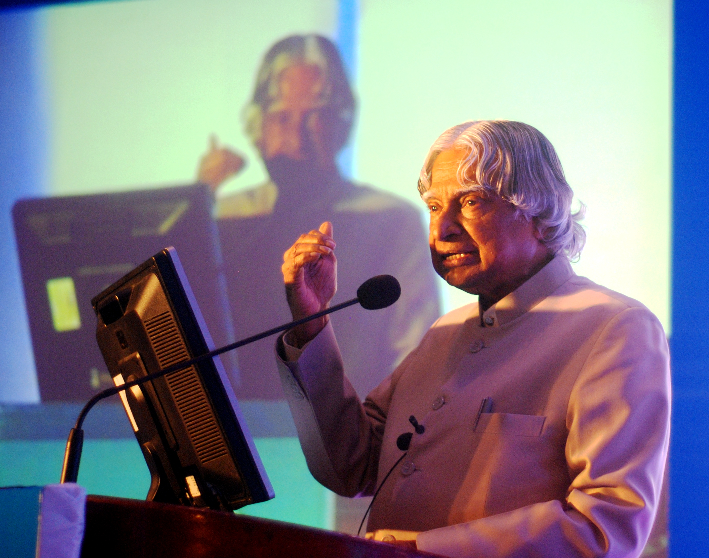

A TRIBUTE TO A GREAT INDIAN
The scientist who inspired millions of young minds to dream, learn and build.
Explore His Journey
Dr. A.P.J. Abdul Kalam
Image: Pushkarv / Wikimedia Commons, CC BY 3.0
HIS STORY
Dr. Avul Pakir Jainulabdeen Abdul Kalam was born on 15 October 1931 in Rameswaram, Tamil Nadu. He developed an early interest in science and engineering and later studied aeronautical engineering at the Madras Institute of Technology. His education helped prepare him for a remarkable career in India's scientific and technological development.
Kalam worked with the Indian Space Research Organisation and contributed to India's space programme. As Project Director of the SLV-III programme, he was associated with the successful launch that placed the Rohini satellite into near-Earth orbit in July 1980. This achievement represented an important stage in India's development of space-launch capabilities.
He later worked with the Defence Research and Development Organisation and became associated with India's missile development programmes. He served as Scientific Adviser to the Defence Minister and later as Principal Scientific Adviser to the Government of India. His career brought together scientific research, engineering and national technology programmes.
In 2002, Kalam became the 11th President of India and served until 2007. After his presidency, he continued working with students and educational institutions. His books, lectures and interactions with young people made education, creativity and scientific thinking important parts of his public work.
MILESTONES
A.P.J. Abdul Kalam was born on 15 October 1931 in Rameswaram, Tamil Nadu.
As Project Director of SLV-III, Kalam contributed to the successful launch that placed the Rohini satellite into near-Earth orbit.
He served as Scientific Adviser to the Defence Minister and Secretary of the Department of Defence Research and Development.
Kalam received the Bharat Ratna, India's highest civilian award.
He served as the 11th President of India from July 2002 to July 2007.
“Thinking should become your capital asset”
RECOGNITION
1981
1990
1997